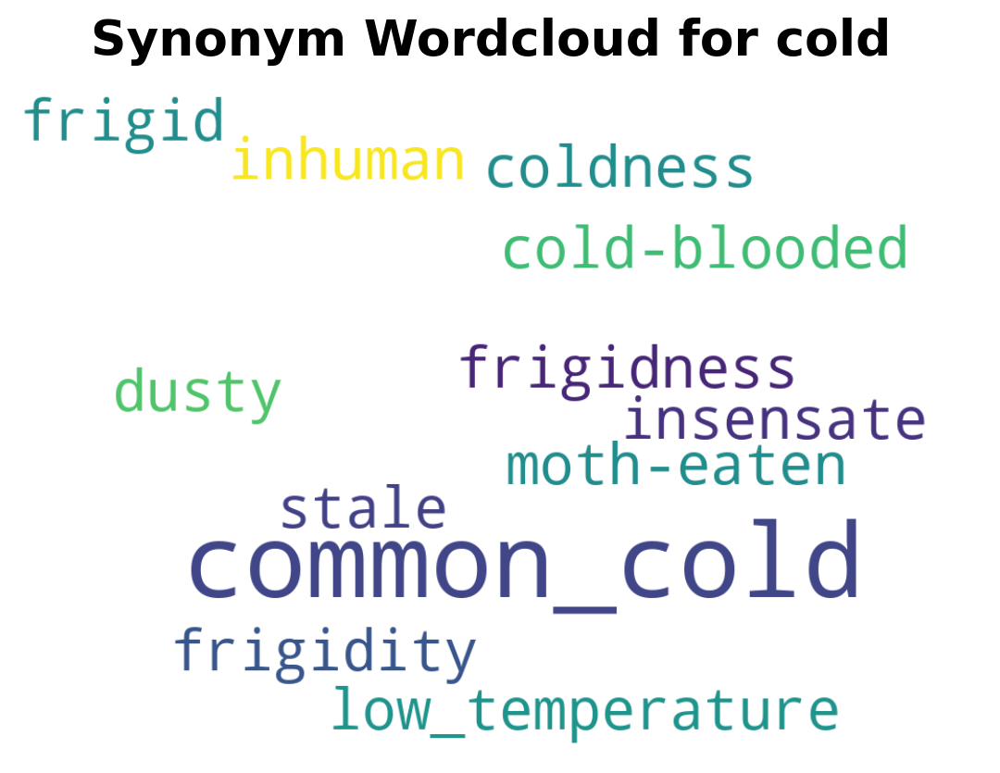
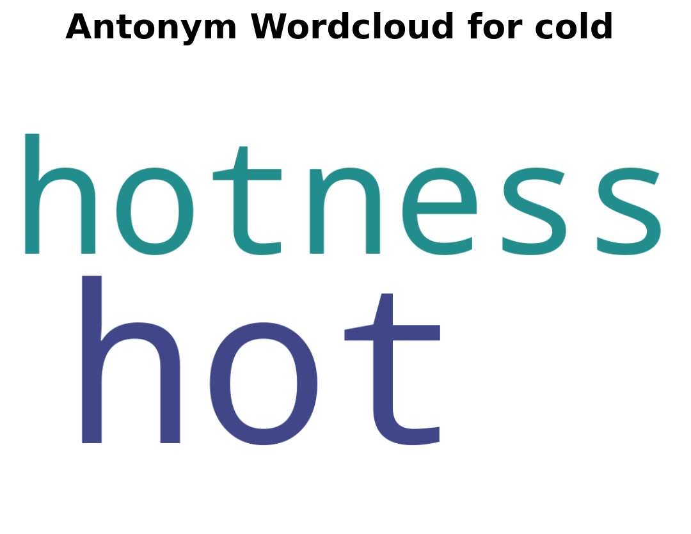

import you_need_a_dictionary as yndTutorial
This is a guide on how to use the you_need_a_dictionary package.
To install the package
Run the following command:
pip install you-need-a-dictionaryWhen to use functions
| Function | Use case |
|---|---|
analyze_sentiment |
Analyse sentiment of sentence |
fetch_definition |
Get definition of word |
word_replacement |
See if a word changes the meaning of sentence |
translate_sentence |
Translate sentence |
create_wordcloud |
Visualise synonyms or anyonyms |
How to use functions
To use any of the functions, you first need to import the package :
analyze_sentiment function
The analyze_sentiment function uses nltk VADER module to analyse the sentiment of a sentence. This function only works for sentences in English.
If you need to analyse the sentiment of a sentence in another language, you can use translate_sentence to translate the sentence into English.
It returns a dictionary with 4 sentiment strengths :
neg: proportion of text that expresses negative sentiment ,neu: proportion of text that expresses neutral sentiment ,pos: proportion of text that expresses positive sentiment ,compound: aggregated sentiment score that ranges from -1 (most negative) to 1 (most positive)
import nltk
nltk.download("vader_lexicon")
ynd.analyze_sentiment("I absolutely love Kpop"){'neg': 0.0, 'neu': 0.308, 'pos': 0.692, 'compound': 0.6697}fetch_definition function
The fetch_definition function uses nltk corpus Wordnet module to find definitions, synonyms and antonyms.
ynd.fetch_definition("star",top_n=2)'Word: star\nSense 1 (n): (astronomy) a celestial body of hot gases that radiates energy derived from thermonuclear reactions in the interior\nSense 2 (n): someone who is dazzlingly skilled in any field\nSynonyms: ace, adept, champion, genius, hotshot, maven, mavin, sensation, superstar, virtuoso\nAntonyms: None found'word_replacement function
The word_replacement substitutes a target word in a sentence with a replacement word and calculates the new sentiment score using the analyze_sentiment.
ynd.word_replacement("I Love MDS", "Love", "enjoy", occurrence=1) {'New Sentence': 'I enjoy MDS',
'Previous Sentiment Type': 'Positive',
'Previous Sentiment Score': 0.808,
'New Sentiment Type': 'Positive',
'New Sentiment Score': 0.762}translate_sentence function
The translate_sentence uses the Google Translate package to translate a sentence into another language. The languages supported and their corresponding language codes that can be found here.
ynd.translate_sentence("Hello world", "fr", source_language="en"){'translated_text': 'Bonjour le monde',
'source_language': 'en',
'target_language': 'fr',
'error': None}create_wordcloud function
The create_wordcloud function creates a wordcloud of synonyms and or antonyms. It uses the nltk corpus Wordnet module to find the similarity strength between the given word and it’s synonym/antonym. The larger a word is the more similar it is to the given word.
ynd.create_wordcloud("cold", "It's officially winter, the air outside is cold.")

<Figure size 672x480 with 0 Axes>